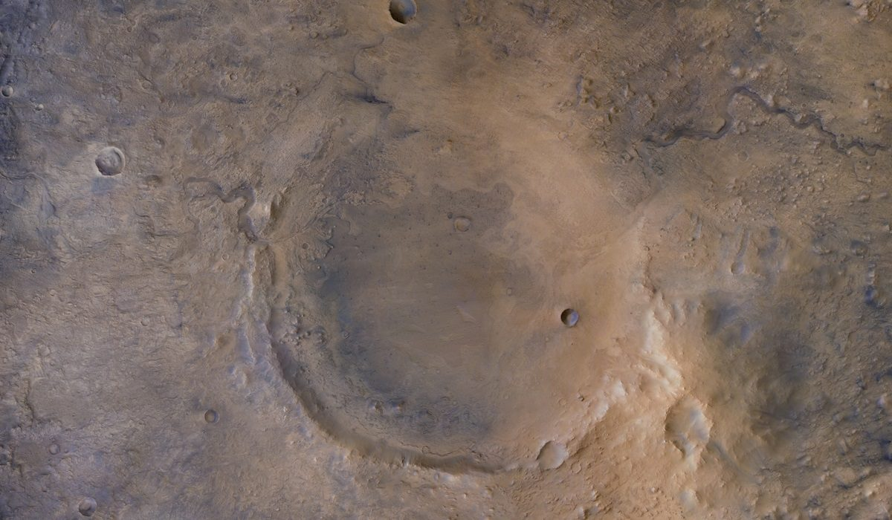

Selenetykos
Une base humaine sur Mars, dans le cratère Jezero.
Découvrir le projet
Le projet
Selenetykos conçoit une base habitée sur Mars, pour une présence humaine durable au-delà de la Terre.

Le site d’implantation
Jezero abrite un delta fossile, trace d’un ancien lac. C’est aussi le site d’atterrissage du rover Perseverance.
- Coordonnées
- ≈ 18,4° N · 77,6° E
- Diamètre
- ≈ 45 km
- Atterrissage de Perseverance
- 2021
Habitat et systèmes
Vue 3D
Modèle 3D à ajouter
Glisser pour tourner · molette pour zoomer
Recherche
Pourquoi le cratère Jezero ?
Jezero abrite un delta fossile, trace d’un ancien lac, et a accueilli le rover Perseverance en 2021. Cette partie détaillera les critères qui ont guidé le choix du site.
Comment produire l’énergie ?
Production et stockage d’énergie pour la base : choix des sources et dimensionnement.
Eau et oxygène
Approvisionnement en eau, recyclage et production d’air respirable.
Ressources locales
Ce que la base peut tirer du sol et de l’atmosphère martiens.
Protection de l’habitat
Réponses de conception face à l’environnement martien.
Architecture des modules
Organisation des espaces de vie, de travail et de recherche.
À propos
Selenetykos est né l’an dernier sous une autre forme, avec une autre équipe et un autre univers. Cette version en est la suite.
Voir l’ancien site